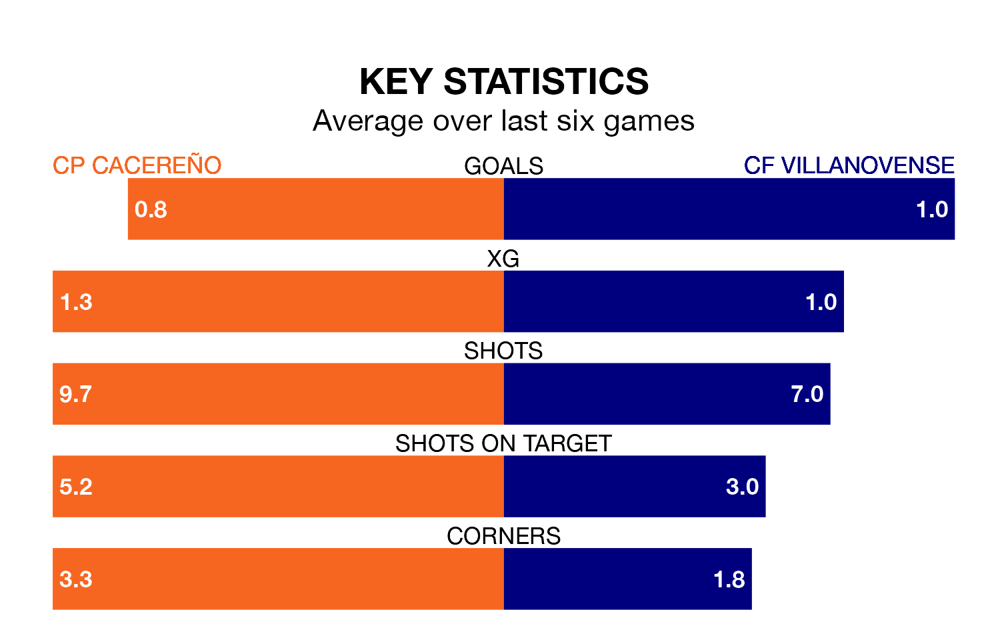

CP Cacereño host CF Villanovense on Sunday at the Estadio Príncipe Felipe in Segunda División RFEF Group 5.
In their last league match, on January 14, CP Cacereño beat CDA Navalcarnero 2-0 away.
Villanovense lost, 1-0 at home against Talavera CF.
In the last 10 years, CP Cacereño and Villanovense have played each other on 10 occasions. CP Cacereño won three of them, Villanovense five, and they drew twice.
On average, CP Cacereño scored 0.8 goals and Villanovense 1.1 in those matches.
Their last meeting was on September 10, when they played out a 0-0 draw.
With 19 goals in 18 games so far this season, Villanovense are scoring at the league's average rate with 1.1 goals per game. And they are conceding fewer than average, letting in 17 goals at a rate of 0.9 per game.
CP Cacereño are also average scorers, with 1.1 goals per game. They have conceded 1.3 goals per game.
The visitors are 12th in the table after 18 games, of which they have won six and drawn five, earning 23 points.
The home team are one place ahead of Villanovense in 11th, with six wins and six draws putting them on 24 points.
CP Cacereño are in reasonable form in Segunda División RFEF Group 5, with three wins and two draws from their last six games.
With two wins and a draw over that period, Villanovense's form is worse – they have taken seven points from 18, compared to CP Cacereño's 11.
Updated: 13:09 (UTC), 17/01/24